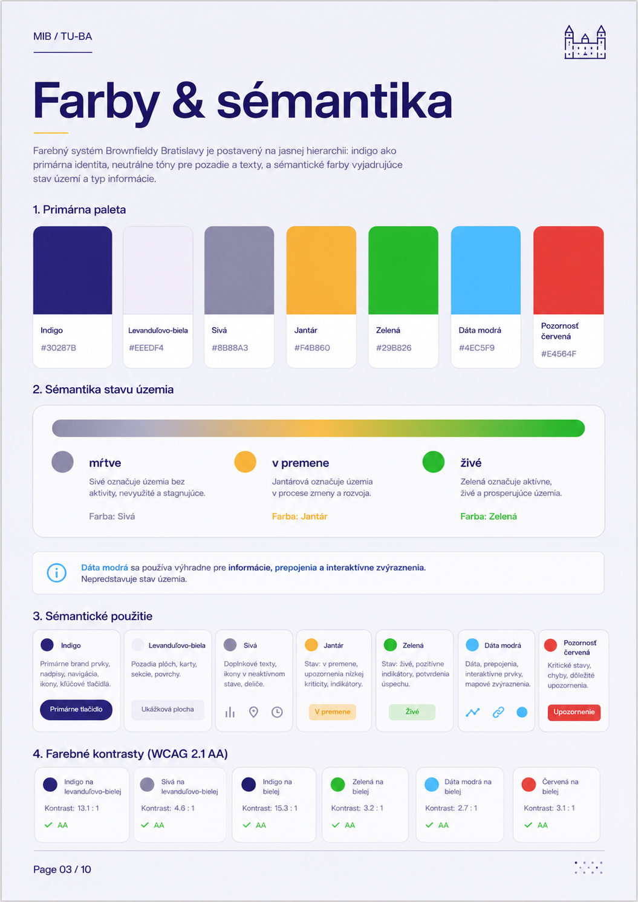

MIB · TU—BA · živý model mesta
Od nevyužitých
území k živým
štvrtiam
Ako prebudiť mŕtve kúty Bratislavy — priamo na skutočnom modeli mesta v centre TU—BA.
Samuel · koncept, dáta a prototyp · 2026
Ako prebudiť mŕtve kúty Bratislavy — priamo na skutočnom modeli mesta v centre TU—BA.
Samuel · koncept, dáta a prototyp · 2026
Do TU—BA ľudia prídu pozrieť, ako sa mení ich mesto. Model svieti a rozpráva príbehy — a brownfieldy sú ten prvý, ktorý naň rozsvietime.
Toľko mesta leží ladom — opustené fabriky, zarastené areály, diery za plotom. A polovica priamo v centre. Chodíme okolo a ani si ich nevšimneme.
Väčšina makety je potme. Na pár miestach sa rozžiari svetlo — to sú brownfieldy. Farba prezradí, ako sú na tom:
Stav čítame z dát (súčasné využitie? zámer?). Dnes: 23 spí · 56 prebúdza sa · 34 žije.
♿ Prístupnosť: každý stav rozlíšiš aj bez farby — líši sa vzorom (plná / šrafa / bodky) a jasom. Vlastníctvo má tvar (🔑 / 🔒) a na obrazovke je vždy aj názov.
Dva projektory premietajú farebné svetlo presne tam, kde územie leží. Maketa ukáže kde to je a aké je to veľké. Detaily a čísla nechávame na obrazovku.
Prejdeš zoznam 113 území alebo ťukneš na mapu — a to isté miesto sa ti rozžiari na makete. Ako keď naň posvietiš baterkou.


Klikneš a dozvieš sa: čo tu kedysi stálo, čo je dnes, čo sa chystá a čím by mohlo byť. Plus vlastník a stará záťaž.
plochy priamo drží mesto (68 ha) — tu vie konať hneď.
je zamknutých u iných — súkromní a štát (512 ha). Tu treba dohodu.
Súkromní 266 ha · Iné 191 · Štát 54 · Mesto+súkr. 36 · Mesto 32.
plochy (193 ha · 15 území) je zamorenej — väčšinu drží Istrochem.
Chyť posuvník a pretoč mesto dopredu. Sivé diery sa menia na zelené štvrte, kde sa dá bývať a žiť.


Do stredu nedočiahneš — a je to plocha na svetlo, nie tlačidlo. Ovládaš od kraja, cez obrazovku či tablet. Aj z vozíka.
Všetky režimy ovládajú jeden spoločný stav — a ten riadi svetlo na makete. Detail a Porovnať sú vnorené v Objave.
Obrazovka ani tablet nič „nepremietajú" — len pošlú príkaz. Spoločný stav ide cez WebSocket do makety aj tabletov naraz.
Jedna paleta, jedno písmo, jeden význam farieb — nech projekcia, obrazovka aj prezentácia vyzerajú ako jedna vec.

Svetlo na modeli, príbeh na dotyk — dá sa použiť aj na bývanie, zeleň či školy. Brownfieldy sú len prvá téma.
Ďakujem · Dáta MIB · UŠ Brownfieldy 2022 · OpenStreetMap